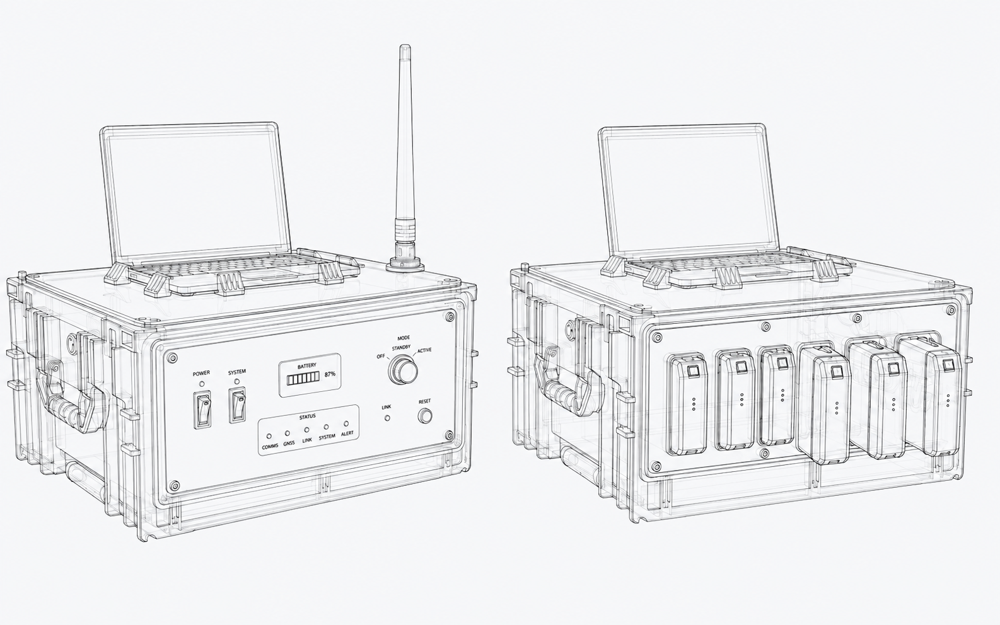

COMUNICAZIONE INDIPENDENTE DA INFRASTRUTTURE DI RETEP.01
Sistema di comunicazione bidirezionale e tracciamento operatori
Sistema di comunicazione e localizzazione pensato per funzionare senza dipendere da Internet, rete cellulare o altre infrastrutture di telecomunicazione presenti sul territorio.
* immagini alterate per riservatezza del prodotto